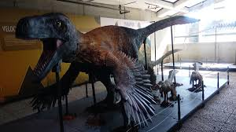

Los dinosaurios fueron un grupo de reptiles que vivieron en la Tierra hace millones de años, durante la era Mesozoica (hace aproximadamente 230 a 66 millones de años). Dominaron el planeta durante mucho tiempo y habitaban en casi todos los continentes. Algunos caminaban en dos patas, otros en cuatro, y podían ser desde muy pequeños hasta gigantes enormes. Los científicos que estudian a los dinosaurios se llaman paleontólogos, y descubren información a partir de fósiles (huesos, huellas o restos que quedaron en las rocas). fuente de informacion y mas datos
Los dinosaurios tenían diferentes dietas dependiendo de su especie: Carnívoros: Comían carne y cazaban otros animales. Ejemplo: el famoso Tyrannosaurus rex. Características: Dientes afilados Garras fuertes Gran velocidad o fuerza para cazar . Herbívoros Comían plantas, hojas, frutas y ramas. Ejemplo: el Triceratops. Características: Dientes planos para triturar plantas Cuellos largos o picos para alcanzar vegetación . Omnívoros Algunos comían plantas y pequeños animales.
fuente de informacion y mas datos
